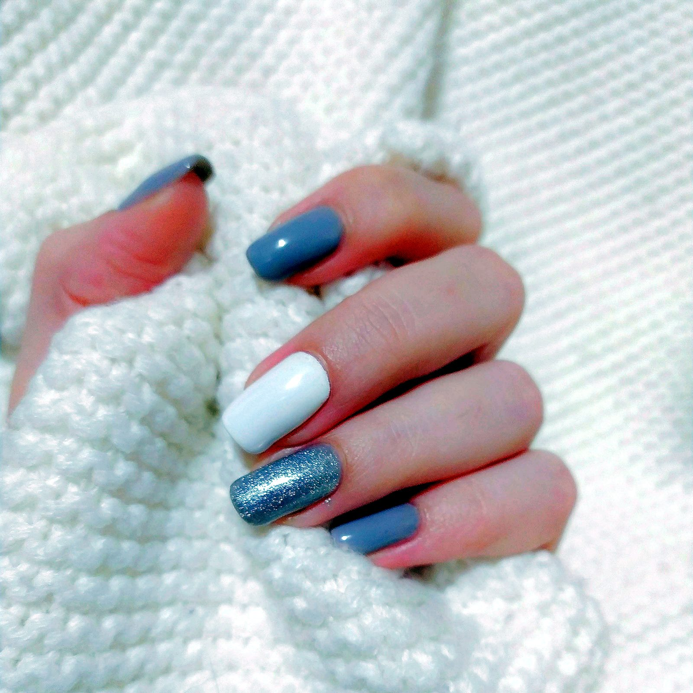

Fungal toenail care, at your home.
A KuuStore technician comes to you for careful cosmetic care of nails affected by fungus: gentle cleaning, shaping, and a simple aftercare routine you can actually keep up. No salon chair, no waiting room.
Book fungal toenail careWhat a visit includes
- A look at each affected nail and a plain-language explanation of what we can and cannot do cosmetically.
- Careful cleaning and shaping with sanitized equipment, opened and prepared in front of you.
- An aftercare kit and routine for Premium visits, written down before we leave.
- Honest referral guidance: if a nail needs a doctor or podiatrist instead, we say so.
Placeholder — before and after gallery
Client photos will appear here only with written consent from the client, per photo. No stock or borrowed results are shown on KuuStore.
KuuStore provides cosmetic nail care, not medical treatment. We do not diagnose conditions and we do not promise to cure any infection. If you have diabetes, circulation problems, pain, or a nail that is getting worse, see a medical professional first.
Prices
| Tier | What you get | Service price |
|---|---|---|
| Basic | Antifungal-focused cleaning, shaping and polish | $75-$100 |
| Premium | Full cosmetic restoration visit plus an aftercare kit and routine | $150-$200 |
Exact price inside the range is confirmed at booking, before your card is charged.
Estimates at booking
Your estimate is confirmed when you book. (The travel-fee calculator was removed 2026-11-09: KuuStore beauty services are now come-to-us at the shop.)
Questions
Is fungal toenail care covered by insurance?
We don't take insurance. You pay KuuStore directly, and you may coordinate with your own provider about reimbursement if your plan allows it for this kind of service.
How long until my nails look better?
Toenails grow slowly, so visible change takes months of steady aftercare, not one visit. Your technician will set honest expectations at the first visit and show you what to watch for. Cosmetic care improves appearance and comfort; it is not a medical cure.
What should I do before the visit?
Have a clean towel, a chair with good light, and bare feet ready. Remove old polish if you can. That's it: we bring the equipment.
What if I need a doctor instead?
We will tell you plainly and not sell you a visit that won't help. Pain, swelling, diabetes or circulation issues, and nails that keep worsening belong with a medical professional.
At the nail station


